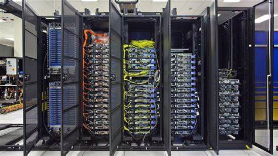

Primera Generación: Tubos de Vacío (1940-1956)
Los primeros sistemas informáticos usaban tubos de vacío para los circuitos y tambores magnéticos para la memoria. Estos equipos a menudo eran enormes, ocupando salas enteras. Además, eran muy costosos de operar y utilizaban una gran cantidad de electricidad.

Segunda Generación: Transistores (1956-1963)
En la segunda generación de computadoras, los transistores reemplazaron los tubos de vacío. El transistor fue inventado en Bell Labs en 1947, pero no se vio un uso generalizado hasta finales de la década de 1950. El transistor era muy superior al tubo de vacío, lo que permitió que las computadoras se volvieran más pequeñas, más rápidas, más baratas, más eficientes energéticamente y más confiables que sus antecesores de primera generación.

Tercera Generación: Circuitos Integrados (1964-1971)
La tercera generación de computadoras se caracteriza por el uso de circuitos integrados, lo que permitió un mayor rendimiento y eficiencia.

Cuarta Generación: Microprocesadores (1971-1975)
La cuarta generación de computadoras La primera generación de computadoras personales duró entre 1971 y 1975. Estas computadoras eran grandes y costosas, y eran utilizadas principalmente por empresas y universidades.

Quinta Generación: Masificasion (1976-1981)
La Quinta generación de computadoras personales duró de 1976 a 1981. Estas computadoras eran más pequeñas y más baratas que sus predecesoras y se comercializaron para un público más amplio.

Sexta Generación: (1982-1986)
La sexta generación de computadoras personales duró de 1982 a 1986. Estas computadoras eran incluso más pequeñas y más baratas que la generación anterior, y fueron las primeras en utilizar interfaces gráficas de usuario (GUI).

Septima Generación: (1987-1992)
La septima generación de computadoras personales duró de 1987 a 1992. Estos ordenadores eran incluso más pequeños y baratos que la generación anterior, y fueron los primeros en utilizar procesadores de 32 bits.

Octava Generación: (1993-Presente)
La Octava generación de ordenadores personales ha durado desde 1993 hasta la actualidad. Estos ordenadores se caracterizan por el uso de microprocesadores avanzados y su capacidad para ejecutar aplicaciones de software complejas.Durante esta generación, se han creado las primeras computadoras cuánticas.
